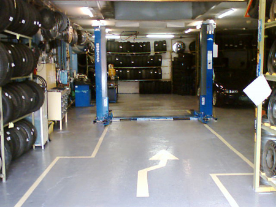
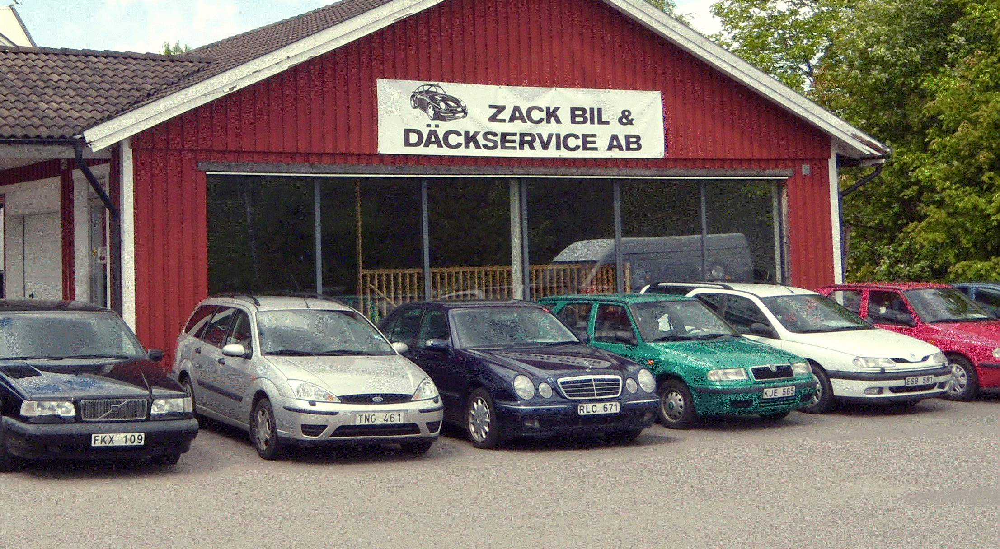
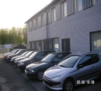

Zackbil och däckservice AB är en märkesoberoende företag som säljer bil och däcktill kunder i hela Sverige.
Zackbil och DäckserviceAB är ett väl etableratföretag som funnits i samma regi sedan 1998. Företaget startade som Sams Bil & Däckservice men
efter ombildningen till aktiebolag byttes namnet till det nuvarande.
Vi har trogna och nöjda kunder från både när och fjärran som upptäckt våra låga priser på både bilar och däck.
Genom låga omkostnader kan vi erbjuda kvalitetsbilar samt nya och begagnade däck med stål eller aluminiumfälgar till bra priser.
Vi utför även service och lättare reparationer till en förmånligt pris


